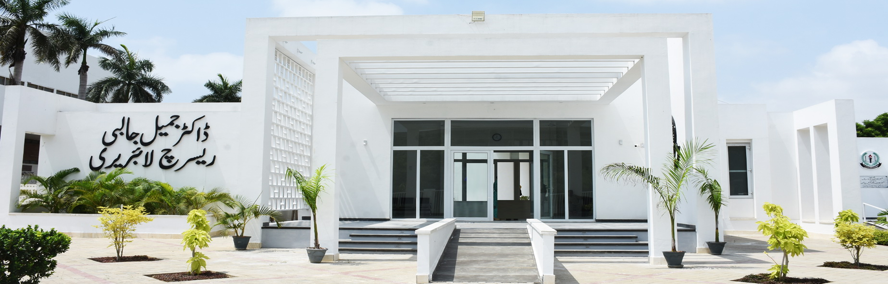
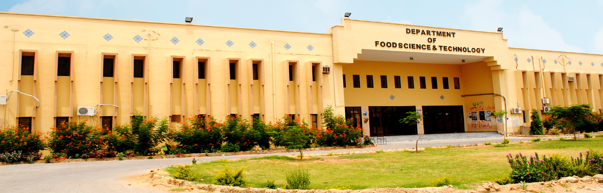
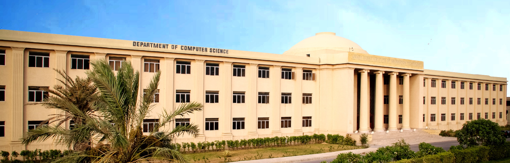

1951
Established by Parliament

Established 1951 · Karachi, Pakistan
Founded by an Act of Parliament in 1951, the University of Karachi has grown from an intake of fifty students into a community of more than 41,000 — eight faculties, 53 departments and twenty research institutes advancing knowledge for Pakistan and the world.
Who we are
When Pakistan was founded in 1947, the means for higher learning were scarce. The University of Karachi answered that need — enacted in 1951 and opening its teaching in 1953 with two faculties and fifty students. In 1960 it moved to the 1,279-acre campus it occupies today, twelve kilometres from the heart of the city.
Today it is the largest university in the country: an affiliating and examining body for more than 145 colleges, home to eminent scholars drawn from Pakistan, Europe and America, and recognised as a leading institution across the Third World. Its purpose remains unchanged — to teach, to question, and to advance knowledge in service of the nation.

Academics
Research & global impact
The University of Karachi produces more MPhil and PhD scientists than any other university in the country. Its institutes address chemistry, molecular medicine, biotechnology, marine biology, space science and the economy — several recognised well beyond Pakistan's borders.

The International Center for Chemical and Biological Sciences is Pakistan's foremost research institute — its HEJ Research Institute of Chemistry designated a centre of the Third World Academy of Sciences, with world-leading strength in natural-product chemistry.
Part of ICCBS — translational research into disease mechanisms and new therapeutics.
Genomics, genetic engineering and applied biotechnology for health and industry.
A federal centre studying the marine fauna of the Arabian Sea, with the country's largest marine-life repository.
From atmospheric and space research to national economic policy analysis.

Library & heritage
Founded in 1952 alongside the University itself and named for the scholar and Vice-Chancellor Dr. Mahmud Husain, the central library sits at the heart of campus in a building shaped like a great ship — one of the largest research libraries in the country and a United Nations depository centre.
Your University, online
Secure, single sign-on access to the tools of academic life — enrolment, results, timetables, teaching and research management.
Courses, CGPA, attendance, fee vouchers, exam schedule, library account and campus announcements — all in one dashboard.
Enter the Student DashboardTeaching load, class timetable, advisees and research students, grade submission, publications and department notices.
Enter the Faculty DashboardNews & events

A short standfirst introducing a featured research story. This card is a content template to be populated by the University's news team.

Placeholder standfirst for an official announcement or notice — replace with live content from the campus news feed.

Placeholder standfirst for a faculty or student story. Structured for editorial content managed through the CMS.
The three cards above are content templates — live headlines, dates and images are supplied through the University's news system.
Admissions
Undergraduate, master's, MPhil and PhD admissions across eight faculties — on the main campus and through 145+ affiliated colleges. Foreign students are welcome to apply.